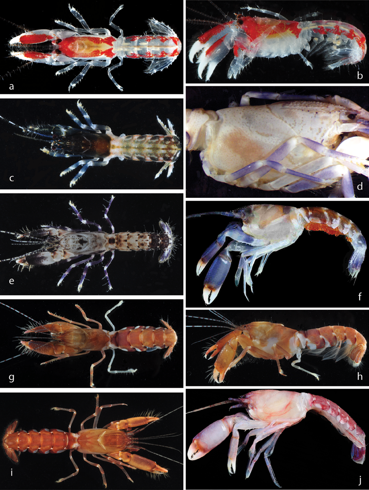
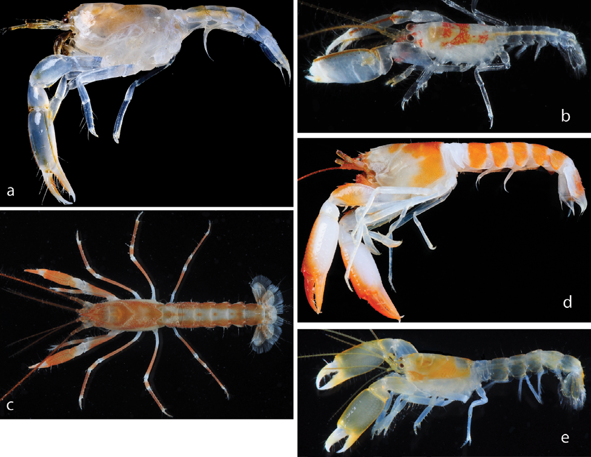

Full text is available as a scanned copy of the original print version.
Get a printable copy (PDF file) of the
complete article, or click on a page image below to browse page by page.
Links are also available for
Selected References.
Images in this article

Figure 1 Alienaxiopsis clypeata (De Man, 1888): a, b, MNHN unregistered (stn PR86). Allaxiopsis picteti (Zehntner, 1894): c, MNHN IU-2013- 1209. Axiopsis pica Kensley, 2003, MNHN IU-2013-7048: d, preserved; e, living. Axiopsis serratifrons A. Milne-Edwards, 1873: f, MNHN IU-2013-638; g, h, MNHN IU-2013-7052; i, MNHN IU-2013-7046; j, MNHN IU-2013-302. Photo credits: AA, a–c, e, g–j; TYC, f; GCBP, d.

Figure 2 Parascytoleptus papua Poore and Collins, 2010: a, MNHN IU-2014-2735; b, MNHN IU-2013-7128. Paraxiopsis brocki (De Man, 1888): c, MNHN IU-2013-7108; d, MNHN IU-2014-2736. Ralumcaris bisquamosa (De Man, 1905): e, MNHN IU-2013-7120. Photo credits: AA, b, c, e; TYC, a, d.